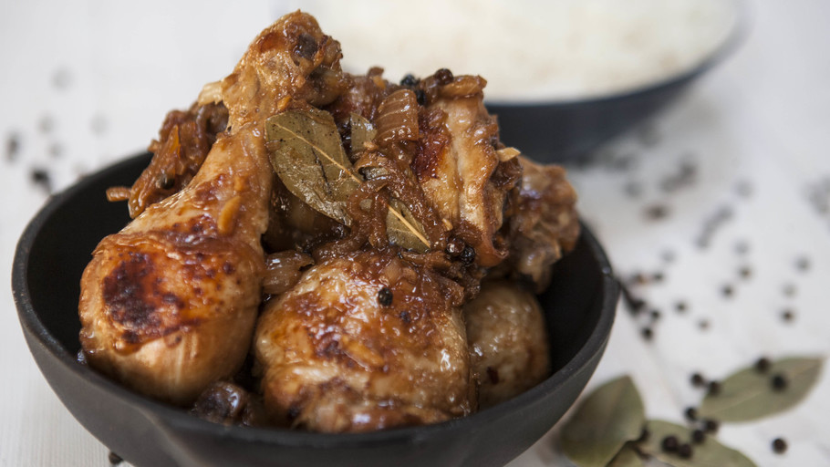

Adobo

Description
Adobo is one of the most popular Filipino cuisine made
by cooking meat in soy sauce, vinegar and garlic.
Ingredients
- 2 tablespoons vegetable oil
- 1 (3 pound) chicken, cut into pieces
- 1 large onion, quartered and sliced
- 2 tablespoons minced garlic
- 1/3 cup white vinegar
- 2/3 cup low sodium soy sauce
- 1 tablespoon garlic powder
- 2 teaspoons black pepper
- 1 bay leaf
Steps
- Heat the vegetable oil in a large skillet over medium-high heat. Cook chicken pieces until golden brown on both sides, then remove.
Stir in the onion and garlic; cook until they soften and brown, about 6 minutes.
- Pour in vinegar and soy sauce, and season with garlic powder, black pepper, and bay leaf. Add the browned chicken, increase the heat to high, and bring to a boil.
Reduce heat to medium-low, cover, and simmer until the chicken is tender and cooked through, 35 to 40 minutes.